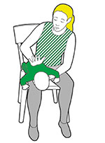
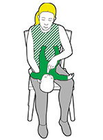
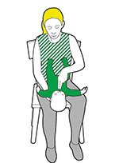

Choking advice for parents
Young children are more likely to choke than adults, because they often put small objects in their mouths that they may breathe in and get stuck.
If a child or baby is choking they’ll get upset quickly and you need to act fast to clear what’s stuck.
If they can’t cough or make any noise, it’s serious.
Baby choking - first aid for parents
Steps
Step 1 of 4: Slap it out
- Lay your baby face down on you thigh and support their head. Give up to five back blows between their shoulder blades with the heel of your hand.
- Give up to five back blows between their shoulder blades with the heel of your hand.

Step 2 of 4: Check their mouth
- Lay your baby on your thigh face up.
- Carefully pick out any obvious objects with your fingertips.

Step 3 of 4: Squeeze it out
- Using two fingers, give up to five downward chest thrusts.
- Check the mouth. If the obstruction hasn't cleared, call 999/112 for emergency help.

Step 4 of 4: Call 999 or 112
- Take your baby with you and call 999 or 112.
- Repeat the above steps 1 to 3 until help arrives.
- If they become unresponsive at any stage, open their airway and check their breathing.
- If they’re not breathing, start CPR (cardiopulmonary resuscitation ‒ chest compressions and rescue breaths). Follow the instructions for treating a baby who is unresponsive and not breathing.
Choking child
Steps
1. Cough it out
- Encourage them to cough it out. If that doesn't work, try to slap it out.
2. Slap it out
If coughing doesn't work:
- Help the child bend forward and use the heel of your hand to give up to five sharp back blows between their shoulder blades.
- Check their mouth to see if there’s anything in there. If there is, get them to pick it out themselves.
3. Squeeze it out
If the back blows don't work, try giving them up to five abdominal thrusts:
- To do this, stand behind the child, making sure they are bending well forward.
- Link your hands between their tummy button and the bottom of their chest, with your lower hand clenched in a fist.
- Then pull sharply inwards and upwards.
If they're still choking call 999 or 112 for an ambulance.
- Once you’ve called an ambulance, continue steps 2 ‘ Slap it out’ and 3 ‘Squeeze it out’ until what’s in there has cleared, help arrives or they become unresponsive.
- If they become unresponsive at any stage, open their airway and check their breathing. If they’re not breathing, start CPR - cardiopulmonary resuscitation to try to release whatever’s stuck in there. Follow the instructions for someone who's unresponsive and not breathing.